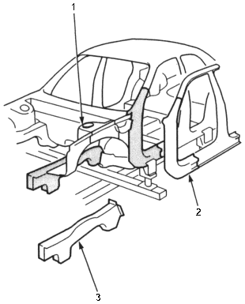
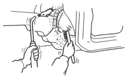
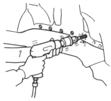
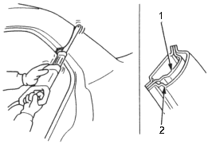

- Decide whether to replace all the affected parts or whether to cut the weld joint parts and replace them.
NOTE: When cutting the parts off, take special care that you do not damage adjacent parts on the vehicle.
Setting Condition for Replacement Parts Joint Sections:
- Make sure that you can perform straightening work after welding.
- Make sure that the locations will not be susceptible to distortion caused by other parts.
- Make sure that there are few removable parts and that the location allows for safe welding.
- Make sure that the joints are short, and that paint repair can be performed easily.
- Make sure that locations are such that the joints can be finished in a way that will not affect the outward appearance.
- Make sure that the locations do not hinder the removing and attaching of parts.
Parts which influence wheel alignment such as damper housing and the side frames must be examined using the frame repair charts.

- DAMPER HOUSING
- OUTER PANEL
(New part)
- FRONT SIDE FRAME
(New part)
- Peel off the undercoat.
|
Be careful not to burn the fittings inside the passenger compartment when heating. |
 CAUTION
CAUTION
- Remove the damaged parts.
|
To prevent eye injury, wear goggles or safety glasses whenever sanding, cutting or grinding. |
- Centre punch around the spot weld imprints on the welded flange and drill holes using the spot cutter.
NOTE: Make a drill hole so that the installation of the repair parts may become easy.
- Remove the MIG weld flange with a disc sander.
- Pry off the welded flange with a chisel.

- Cut off the outer panel with an airsaw.
NOTE: Be careful not to cut the inner section.

- STIFFENER
- OUTER PANEL